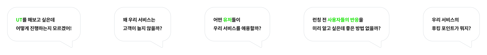

소개
프로세스
결과 자료
간단 진단
가격 패키지
문의하기
유저의 피드백을 통해
더 빠른 성장을
경험해 보세요
.
모디파인은 약속합니다. 지금보다 더 나아질 거라고
리서치 문의하기
간단 진단 신청
mo
defy
모디파인은 'more'의 뜻을 가진
mo
와
'맞서다'라는 뜻을 가진
defy
의 합성어입니다
모디파인은 시장의 다양한 문제점에 맞서
가치 있는 해답을 제안하고자 하는
UX 리서치 전문 에이전시입니다
Why
UX 리서치
한 번 이상 해보셨나요?
UX 리서치를 해본 서비스와 안 해본 서비스는
성장 속도에 차이가 날 수밖에 없습니다

고객의 목소리를 분석하여
서비스의 개선점을 발견해요
서비스에 적합한 리서치 방식을 통해 사용자의 니즈를 파악하고
시장의 수요에 맞는 서비스 개선점을 도출합니다
맞춤형 리서치 구성을 통해
빠르게 피드백을 받아보세요
필요한 리서치만 골라 시간과 비용을 줄이고,
실현 가능성을 빠르게 검증해 보세요
솔루션 제안에서 더 나아가
UX/UI 개선까지 한 번에!
서비스 검증을 통해 얻은 솔루션을 바탕으로
UX
/
UI 전문가들과 함께 서비스를 개선해 보세요
(모디파인은 UX
/
UI 전문 서비스 제너레이터 리오랩과 함께합니다)
 defy
defy